עיצוב לוגו: מהרעיון לסקיצה
בפרק הקודם ראינו מה זה לוגו טוב. כאן עוברים לאיך: מהמחקר והשאלות ללקוח, דרך שש שיטות ליצירת רעיונות, ועד סקיצה, הדמיה ולקוח מרוצה. הסדר כאן הוא סדר העבודה.
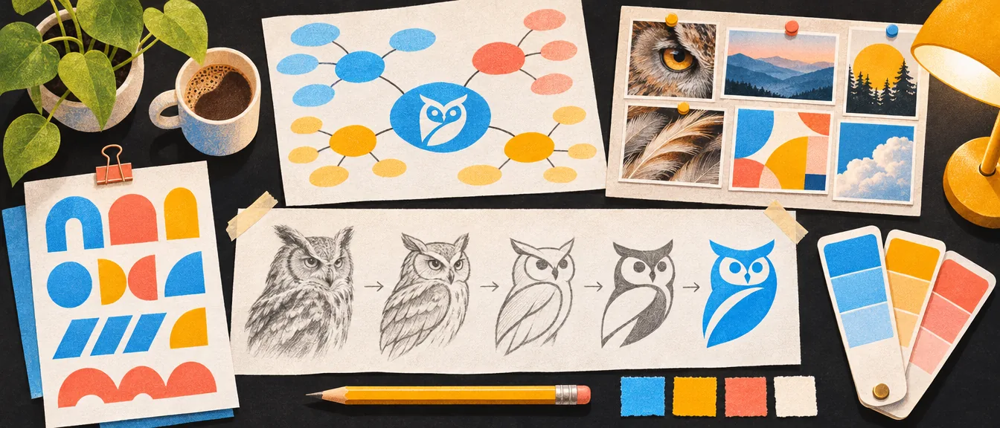
התהליך המקצועי מתחיל הרבה לפני אילוסטרייטור
אם התהליך שלכם עדיין מתחיל בפתיחת תוכנה ושרטוט וקטורים, אתם בדרך לקשיים. שלב החשיבה הוא הקריטי.
זה הפרק שלוקח את חמשת השלבים האלה ומפרק אותם לעבודה: קודם המחקר, אחר כך השיטות ליצירת רעיונות, ובסוף צעדי העבודה והלקוח.
חמשת השלבים
- 1מחקר ומיצובאיפה המותג רוצה לעמוד?חשיבה
- 2לוחות השראהכל רפרנס מסיבה מוצדקתחשיבה
- 3חקר וסקיצותמהר, חופשי, על ניירחשיבה
- 4זיקוק ועידון ידניהכיוונים החזקים ביותרמערכת
- 5בניית המערכתכל גודל, כל הקשרמערכת
מה יוצא מהשלב: משפט מיצוב אחד שאפשר להגיד בקול, ומפה של המתחרים.
מה יוצא מהשלב: לוח השראה אחד או שניים, וליד כל רפרנס מילה שמסבירה למה הוא שם.
מה יוצא מהשלב: עשרות סקיצות קטנות, רובן לא טובות. זה בסדר, זה התפקיד שלהן.
מה יוצא מהשלב: שניים או שלושה כיוונים, מצוירים נקי, שכל אחד מהם עונה על הבריף.
מה יוצא מהשלב: מערכת שלמה: סמל, לוגו מילה (Wordmark), אווטאר, גרסה קטנה, ובדיקה שכולם עובדים יחד.
- מחקר ומיצוב מותג. איזה מקום המותג רוצה לתפוס בשוק? מול מי הוא מתחרה? מהי ההבטחה הבסיסית שלו? סיפור, קהל ומיצוב
- בניית לוחות השראה (Mood Boards). הלוחות מבוססים על האסטרטגיה. כל רפרנס נמצא שם מסיבה מוצדקת, לא באופן אקראי. לוח השראה לוח השראה בהגשה: לא חובה, אבל יתרון
- חקר וסקיצות. על נייר או טאבלט. בשלב הזה עובדים מהר, בחופשיות, וממוקדים ברעיונות, לא בפיקסלים מושלמים. הרבה סקיצות קטנות, בשחור־לבן: זה מכריח את הצורה להיות חזקה בלי עזרה של צבע. סקיצות
- זיקוק ועידון ידני. בחירת הכיוונים החזקים ביותר שמתחברים לבריף ול„שבט”, ועידונם באופן ידני ומדויק.
- בניית המערכת. מתכננים איך הלוגו יתנהג בגדלים שונים ובהקשרים שונים: גרסאות אייקון, לוגו מילה (Wordmark), אווטארים לרשתות חברתיות, בדיקות אנימציה (במידת הצורך). מערכת לוגו
אתם לא מעצבים לוגו. אתם בונים מערכת זהות. אחרי שלב הסקיצות, התהליך מתמקד בבניית מערכת שלמה סביב הכיוונים החזקים ביותר.
לחצו על גרסה במסלול:
אייקון אפליקציה
איפה: מסך הבית בטלפון, חנות האפליקציות.
למה: ריבוע קטן עם פינות מעוגלות, ואין בו מקום לשם. רק הסמל, על רקע בצבע המותג.
לוגו מילה (Wordmark)
איפה: כותרת האתר, חתימת דוא"ל, מסמכים ומצגות.
למה: כשיש מקום לרוחב, השם עצמו עושה את העבודה וקל לקרוא אותו.
אווטאר לרשתות
איפה: תמונת הפרופיל ברשתות החברתיות ובאפליקציות של הודעות.
למה: הרשתות חותכות את התמונה לעיגול, אז הסמל חייב לשבת במרכז ולהשאיר אוויר מכל הצדדים.
גרסה זעירה (favicon)
איפה: הלשונית בדפדפן והסימניות.
למה: 16 פיקסלים. שורדת רק צורה אחת חזקה, בלי פרטים ובלי טקסט.
פריים מאנימציה
איפה: מסך טעינה, פתיח של סרטון, סטורי.
למה: הסמל צריך לזוז בלי להתפרק. בודקים שגם באמצע התנועה הוא עדיין מזוהה.
וכשהמערכת מוכנה, מגיע שלב ההצגה ללקוח: לא 20 אופציות, אלא פתרון מנומק. הצגה ללקוח
עבודת המחקר
שינוי התפיסה שמציל קריירות: הלוגו אינו עבור הלקוח שלכם
הלוגו מיועד לאנשים שהלקוח שלכם רוצה להתחבר אליהם. הוא פיסה של שפה חזותית עבור „שבט” ספציפי. לפני שאתם משרטטים סקיצה, עליכם לדעת את התשובות לחמש השאלות האלה. לחצו על כל שאלה:
לוח שבט: מה האנשים האלה כבר רואים, לובשים ואוהבים
לא „כולם”, וגם לא „גילאי 25–45”. תארו אנשים: מה הם עושים בשבת בבוקר, על מה הם מוכנים לשלם יותר. דוגמה: לקוח הוא מאפייה שכונתית. השבט שלה הוא אנשים שמוכנים לחכות בתור בשביל לחם מחמצת, כי הם מעריכים עבודת יד.
הבגדים הם שפה חזותית שהם כבר בחרו בעצמם: חומרים, צבעים, גימור. דוגמה: סינר בד, פשתן, צבעי אדמה, בלי לוגואים צעקניים. זה כבר רמז לפלטה ולמרקם של המותג.
פתחו את הפיד שלהם, לא את שלכם. אילו צילומים, אילו פונטים, כמה אוויר יש בכל פוסט. דוגמה: אור טבעי, שולחנות עץ, תקריבים של קמח וידיים.
המותגים שהם כבר בחרו מראים מה הם מוכנים לקבל. דוגמה: בית קלייה קטן עם שקית נייר פשוטה וחותמת. לידו, לוגו מבריק בגרדיאנט ייראה להם זר.
מה הם רוצים שיחשבו עליהם כשהם מחזיקים את השקית ביד. דוגמה: „אני תומך בעסקים קטנים ואכפת לי ממה שאני אוכל”. הלוגו צריך לעזור להם להגיד את זה בלי מילים.
“You’re not chasing the pretty design. You’re speaking visual culture here.”
אתם לא רודפים אחרי העיצוב היפה. אתם מדברים כאן תרבות חזותית.

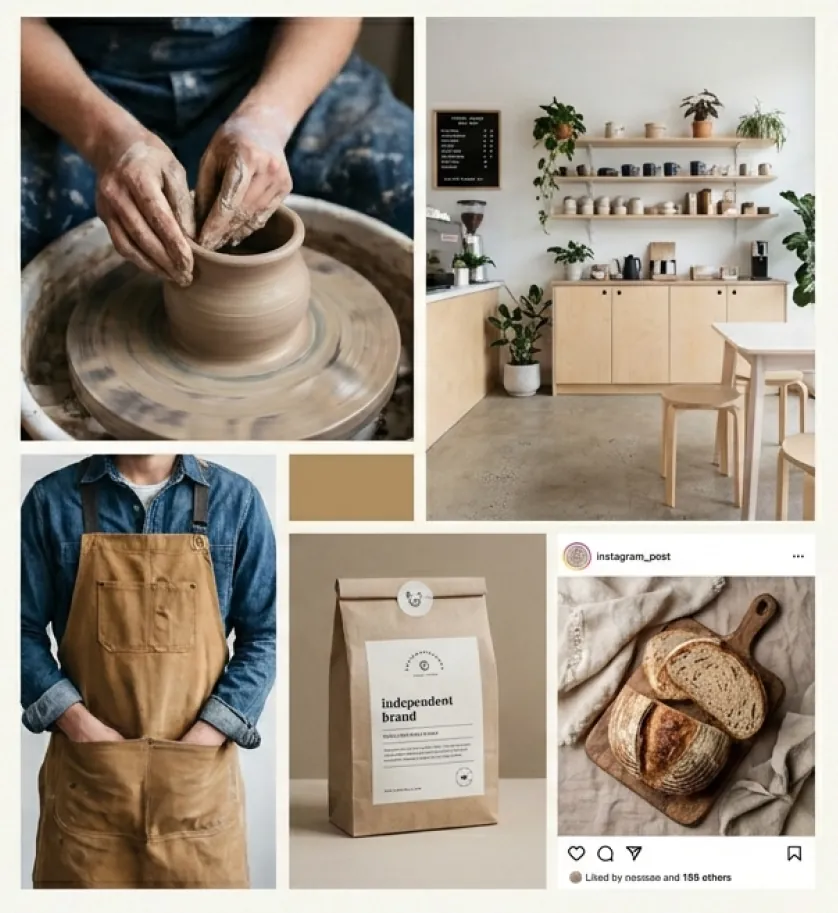
לפני שמתחילים: שאלות ללקוח
לפני שתתחילו לעצב את הלוגו של הלקוח, יש לשאול אותו שאלות חשובות. התשובות עליהן יעזרו לקבוע את הצרכים שלו.
לוגו חדש או רענון של לוגו קיים
- האם זה לוגו יחיד? מגוון של לוגואים? לוגואים לתתי־מותגים של החברה או של המותג?
- תרגיל מיתוג? האם אתם מתכננים לוגו חדש, או עיצוב מחדש של לוגו קיים?
עיצוב לוגו חדש לגמרי
התהליך פשוט, כי אין שפה עיצובית שצריך להתחשב בה.
דד ליין, תקציב והיקף עבודה
- מהו התאריך האחרון להגשה?
- מהו תקציב העבודה?
- מהו היקף העבודה? (לוגו לדפוס, לוגו לאינטרנט, מדיה חברתית וכו’)
שם החברה או המותג
חשבו על שם החברה או המותג: למה בחרו בשם הזה? מה הוא מעורר? בדרך כלל שם קצר טוב יותר משם ארוך. אין צורך להשתמש בכל השם החוקי של החברה בלוגו, מותר לקצר.


זה גם העיקרון השני של לוגו טוב: הלוגו צריך להחמיא לשם. החמיאו לשם החברה
מי קהל היעד?
- מי קהל היעד של החברה או המותג? ואיך החברה או המותג נתפסים בעיניו?
- איך מתקשרים עם קהל היעד?
תשובות לשאלות האלה יעזרו לתכנן אסטרטגיה, ולהציע רעיונות איך לתקוף את הבריף. מי השבט למי המותג פונה
יופי או אופי?
מה סוג האישיות שהמותג משקף? לוגו צריך להקרין את מהות החברה. כדי להגדיר את מהות המותג, יושבים עם הלקוח ויוצרים רשימת תארים ואסוציאציות במילים פשוטות, כפי שהלקוח מרגיש שהן מגדירות את העסק. מותגים רוצים להקרין ערכים מדויקים.
הרשימה הזו היא בדיוק חומר הגלם של מפת החשיבה. מפות חשיבה 12 הארכיטיפים
מי המתחרים?
- מי המתחרים העיקריים של המותג או החברה?
- איך החברה מבדלת את עצמה מהמתחרים?
- הסתכלו על הלוגואים של המתחרים: האם יש נושאים משותפים?
- האם יש קלישאות בעיצובי המתחרים שהייתם נמנעים מהן?
לא לקחת יותר מדי השראה מהמתחרים, כדי להישאר מקוריים. מקורי מחקר מתחרים
את כל השאלות האלה, מסודרות לטופס אחד, תמצאו בבריף הלוגו שלי. בריף לוגו
יצירת רעיונות והשראה: שש שיטות
בבסיס כל לוגו טוב יש רעיון טוב. הנה שש שיטות והחלטות ליצירת רעיונות:
שיטה 1. מפות חשיבה (שמש אסוציאציות)
מפות מוח, מפות חשיבה או שמש אסוציאציות עוזרות לשקול כיווני עיצוב שונים. מפת המוח היא לא יותר מתהליך פשוט של התאחדות מילים: כותבים מילה במרכז, ואז יוצאים ממנה החוצה וכותבים מילים אחרות שעולות על הדעת.
בסופו של דבר מתקבל ענן מחשבה, ענן אסוציאציות. הענן הזה הוא מפת המוח, וממנו יצאו כל הרעיונות: על צורה, על צבע, על משמעות, ותובנות מהחיים.

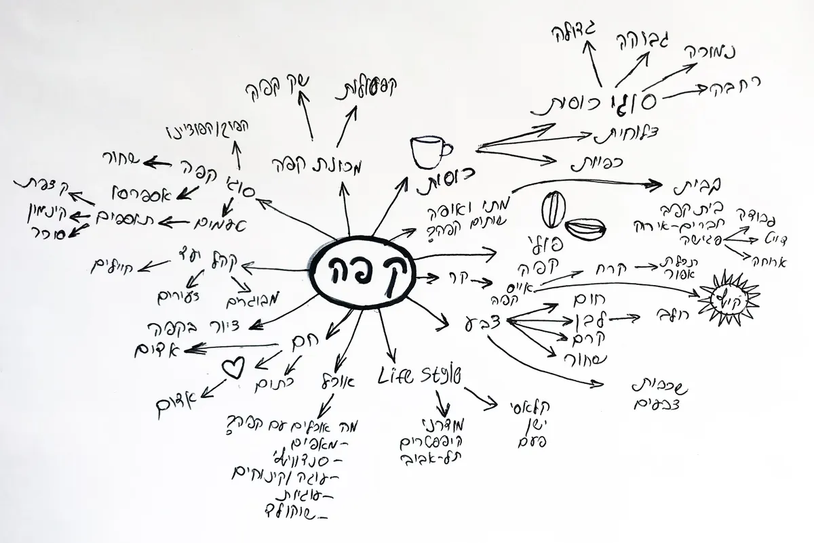
מה סוג האישיות שהמותג משקף? מתחילים מרשימת תארים ואסוציאציות במילים פשוטות, ויוצרים מפת חשיבה לכל שם תואר, אסוציאציה, מילה וכו’. לדוגמה, רשימה עבור בית קפה: קפה, תל־אביבי, מודרני־עכשווי, הייטקי־מתקדם. מיועד לאנשים שאוהבים לשבת עם כוס קפה ומחשב נייד, ולעבוד מבית קפה.
אחרי הסימון של המילים, נסו לשלב אותן יחד בסקיצה. שימו לב לשינוי אחד שקרה ברשימה בהרצאה אחרי הסימון: „בניינים גבוהים” הפכו ל„עזריאלי”. מהכללי אל הספציפי: מגדל עזריאלי הוא צורה שאפשר לצייר, ושכל תל־אביבי מזהה. סקיצות
שיטה 2. לוח השראה (Mood Board)
בהרצאה אני מתאר אותו כלוח של מחשבות, רגשות ו„רוח”. לוחות הם שיטה טובה לקבוע את הטון (הצבעוניות) והסגנון העיצובי של הפרויקט. הלוח יציג את הרגשות, האסוציאציות והאסתטיקה שהלקוח מכוון אליהם. רצוי לשמור את הלוח בסביבת העבודה, כדי שיעזור להתמקד בשפה ובנראות שהפרויקט מכוון אליהן.


ובהגשה הסופית? לוח השראה בהגשה: לא חובה, אבל יתרון
שיטה 3. שפה גרפית: החלטה על סגנון
לפני שמציירים, מחליטים באיזה סגנון גרפי הלוגו ידבר. אלה שנים־עשר הסגנונות שאני מציג בהרצאה. לחיצה על דוגמה פותחת אותה בגדול:

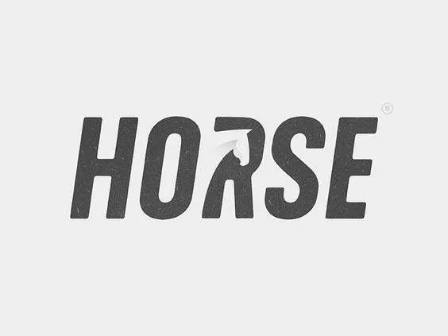

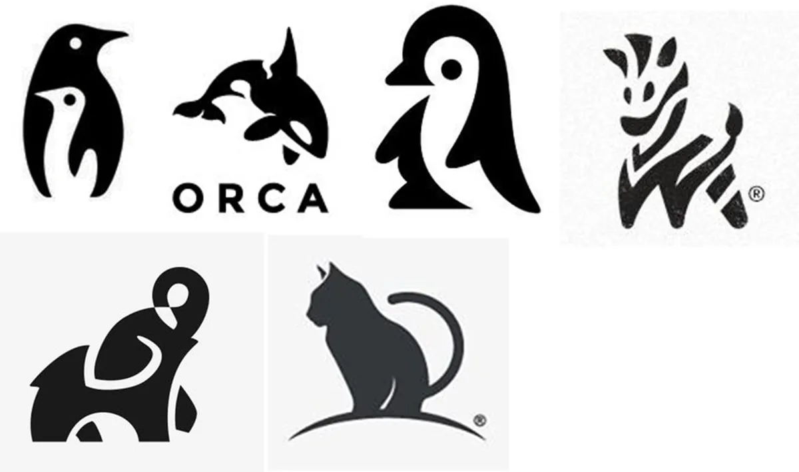

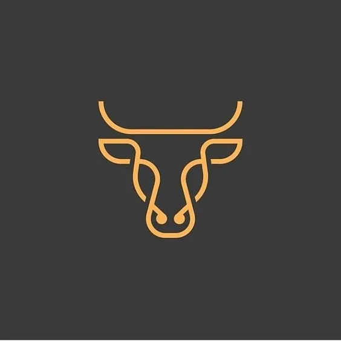

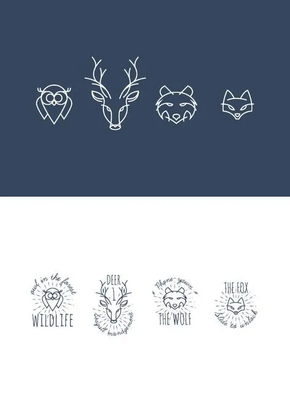

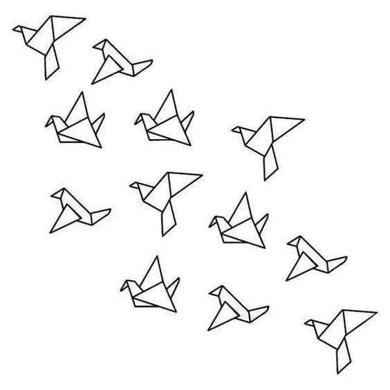

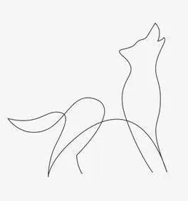

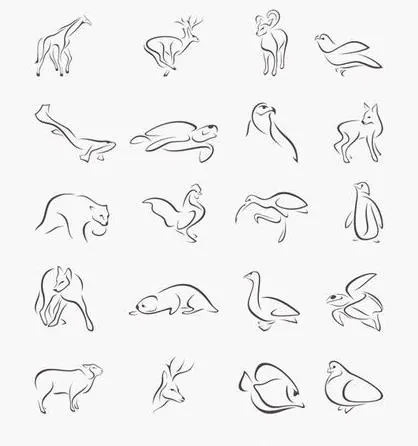

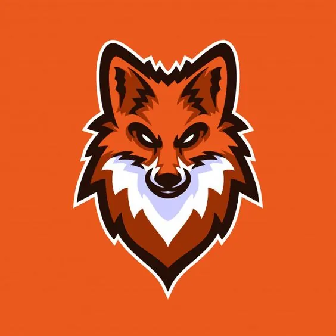

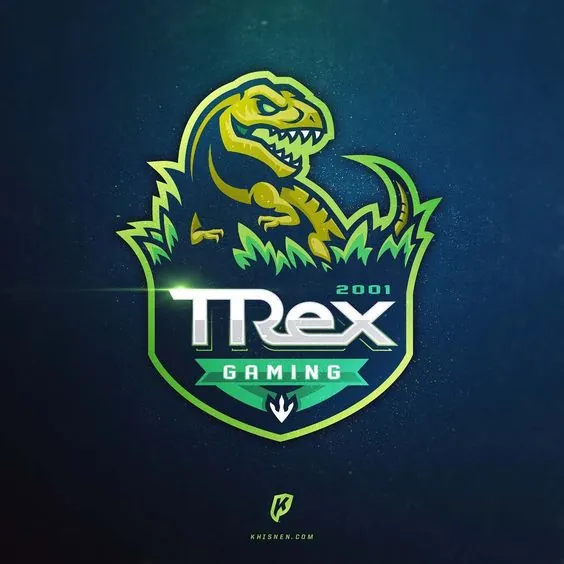

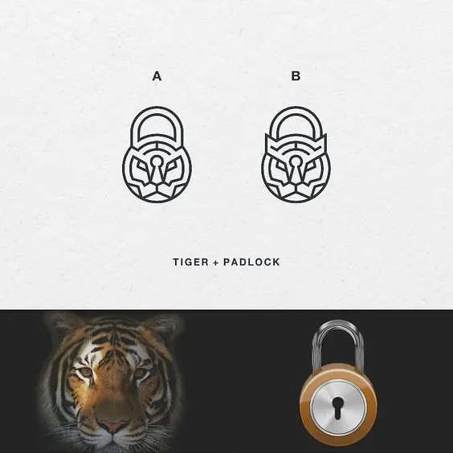

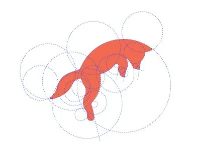

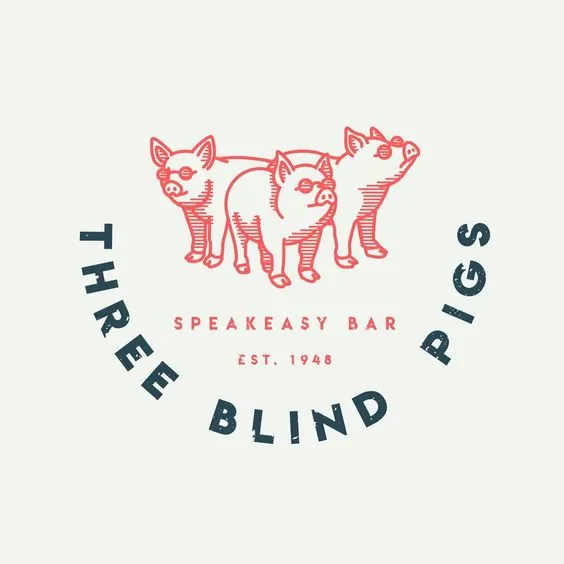
הדוגמאות הן עבודות של מעצבים שונים, שאספתי להרצאה כדוגמאות לימוד.
שני דברים שקשורים למותג מתחברים לסימן אחד: נמר ומנעול, או לחם ומטרייה.

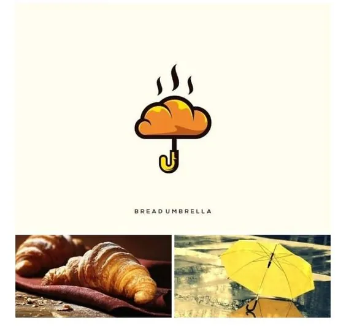
הרבה מהסגנונות האלה הם גם סגנונות איור, ושווה לבחור אחד שיחזיק את כל השפה הגרפית. חמישה סגנונות איור
שיטה 4. סקיצות (Sketching)
קחו את הזמן לציור סקיצות של הרעיונות שלכם בצורה חופשית, ואל תדאגו לאיך שהם נראים. שמרו על ראש פתוח, ואל תגבילו את עצמכם בשלב הזה.
לאופן הרישום יש ערך ומשמעות גבוהים לגילוי רעיונות. הרבה יותר מהיר לשרטט ולצייר עם עיפרון על נייר מאשר על מחשב, ואפשר למיין מהר יותר את הרעיונות שלא עובדים.


אם אתם פוסחים על שלב הסקיצות ועוברים ישר למחשב, אתם יכולים למצוא את עצמכם עובדים לשווא על עיצוב לא רלוונטי.
ובעיה נוספת: המחשב יכול לגרום לעיצובים שאינם חכמים, בלי קונספט, להיראות טובים ומלוטשים בקלות. ככה קל להתעלם מהעובדה שבעיצוב חסרים מרכיבים חיוניים, כמו רעיון או מסר חזק.


שיטה 5. WHAT THE FONT
כשעובדים על לוגו, יש שאלות שאתם צריכים לשאול את עצמכם (ואת הלקוח). הראשונה: איזה פונט? בחרו סוג ובדקו איך אותו „Abc אלף” משנה אופי:
פינות חדות מול פינות מעוגלות
עיצוב דו־מימדי (שטוח) מול תלת־מימדי
ההבדלים בין סוגי הפונטים, ואיך בוחרים ומזווגים: שישה סוגי פונטים טיפים לבחירת פונטים
שיטה 6. צבעוניות
השאלה השנייה: לוגו מונוכרומטי (בצבע אחד, או בצבע שמשתנה), או לוגו צבעוני עם צבעים קבועים?


קודם כל לפי הנושא, ושנית לפי המסר התת־הכרתי של הצבעים. וכמובן, לכל כלל יש יוצא מן הכלל, ולכן מותר לשבור את ההמלצות. פסיכולוגיה של צבעים צבע על גבי הצורה

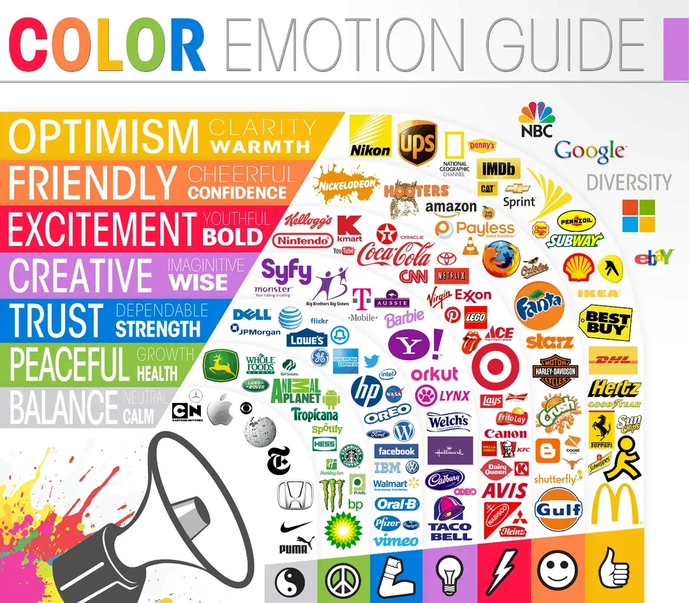
מרפרנס ללוגו: ציר ההפשטה
איך הופכים דבר אמיתי ללוגו? ציירתי ינשוף אחד שש פעמים, על ציר אחד: מצד אחד מציאותי, הרפרנס, ומהצד השני מסוגנן, עד שהוא נהיה אייקון. באמצע עובר סגנון „ספר ילדים”. לחצו על הינשופים, מהמציאותי אל האייקון:
מתחילים מהדבר עצמו: תמונה, או ציור מתוך תמונה. כל הנוצות, כל הצללים. זה לא לוגו, זה מחקר. כאן לומדים איך ינשוף באמת בנוי: הראש בלי צוואר, האוזניים, העיניים הגדולות.
אותו ינשוף, כבר בלי חלק מהנוצות. מתחילים להחליט מה חשוב ומה רעש.
נשארות שתי שורות נוצות, וקו המתאר נהיה שלם יותר. הינשוף עדיין מזוהה לגמרי, עם חצי מהפרטים.
הנוצות הופכות לזיגזג, הכנף לכתם צבע אחד. כאן הציור כבר מקבל אופי וסגנון משלו, אבל הוא עדיין איור ולא סימן.
צורה אחת מלאה, בצבע אחד. שני זיגזגים לבנים מספרים „נוצות”, והעיניים עושות את כל השאר. זה כבר עובד בשחור־לבן ובגודל קטן.
הקצה של הציר: זוויות ישרות, זיגזג אחד, שום קו מיותר. מה שנשאר הוא בדיוק מה שצריך כדי לזהות ינשוף. ומה שהשארנו בחוץ חשוב לא פחות ממה שהשארנו בפנים. פשטות

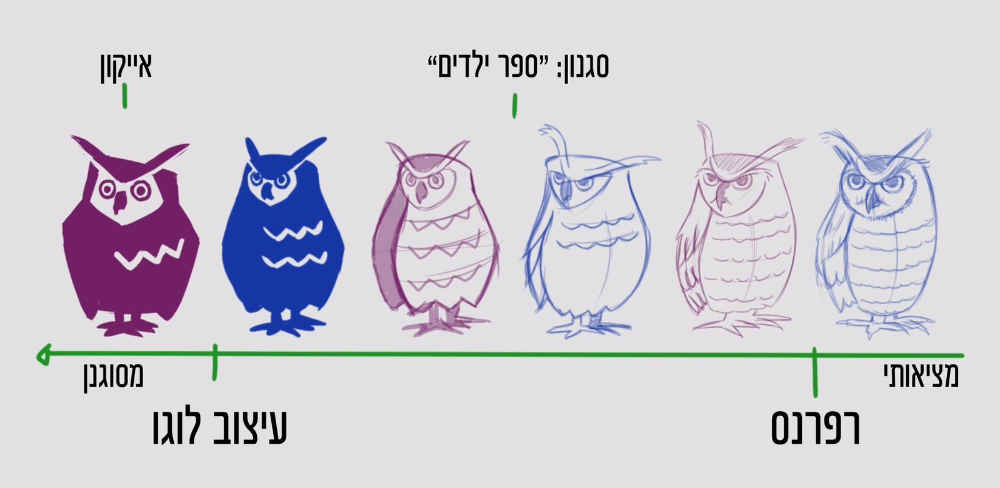
תרגיל: קחו את החיה או החפץ שיצאו לכם ממפת החשיבה, ציירו אותם שש פעמים על אותו ציר, ועצרו בנקודה שבה הם עדיין מזוהים אבל כבר שלכם. מפות חשיבה
אז איך עובדים על לוגו: חמישה צעדים
כל מה שראינו עד עכשיו, מסודר לפי סדר העבודה:
1. מחברת, אסוציאציות והחלטות
לוקחים מחברת ומתחילים לרשום את כל האסוציאציות שעולות בראש בנוגע לחברה, למותג, לעסק, למוצר או לשם: הרגשה, צבע, צורה, חומר. קשה או רך, עגול או זוויתי, בתנועה או סטטי, גדול או קטן, חזק, חמוד, מצחיק או רציני וכו’. בעצם, כל רעיון ואסוציאציה. מפות חשיבה
מבצעים את עבודת המחקר, ומחליטים על סגנון גרפי ועל סוג לוגו. המלצה: לעצב את הלוגו בכל חמשת הסוגים. שפה גרפית חמשת סוגי הלוגו
2. סקיצות קלילות, הרבה מהן
מתחילים לצייר סקיצות קלילות, בלי יותר מדי פרטים, ומחפשים כמה שיותר אפשרויות וזוויות לאותו קונספט. מומלץ עם עיפרון. למי שמתקשה להתחייב ומרבה במחיקות, עדיף טוש או עט. העיקר שיהיה הרבה חיפוש והרבה ציורים: רק כך מגיעים לתוצאות. סקיצות
3. עוברים למחשב, ובסוף מחפשים דומים
עוברים למחשב ומתחילים לעבוד. בסיום העבודה מחפשים באינטרנט רעיונות דומים, ומוודאים שזה לא נעשה בעבר.
זה אמנם יכול להיראות כמו בזבוז זמן, אבל בגלל הטבע האנושי: אם נחפש דוגמאות לפני שנתחיל לעבוד, יש סיכוי טוב שנגמור בכך שנעתיק את העיצוב, אפילו אם לא נתכוון לזה.
זה לא סותר את מפת המתחרים מהפרק השלישי: אותה עושים קודם, כדי להבין את השוק. כאן מדובר על משהו אחר, לא לחפש דוגמאות עיצוב שאפשר להעתיק מהן. מחקר מתחרים מקורי
4. לעזוב את הלוגו לכמה ימים
לעזוב את הלוגו, לא לגעת בו כמה ימים ולא להראות ללקוח. לחכות. אחרי זמן מה חוזרים אליו, מתבוננים בו ושואלים את עצמכם:
- „האם יש משהו שאני יכול לשפר?”
- „האם זה הכי טוב שאני יכול לעשות?”
אם התשובה טובה, אפשר להתקדם ולשלוח ללקוח.
5. תמיד לשלוח בהדמיה
תמיד מומלץ לשלוח ללקוח את הלוגו בהדמיה. זה יוצר קישור טוב יותר בין הלקוח לעיצוב, ונותן לו המחשה אמיתית של איך הלוגו ייראה על המוצר, בהדפסה וכו’. יש אלפי אתרים שנותנים מוקאפים חינמיים כל שבוע! רק צריך להקדיש קצת זמן ולהוריד אותם. לא להתעצל. איפה מוצאים מוקאפים
תהליך העבודה, כולל הלקוח
וכך זה נראה מהצד של הלקוח: שמונה תחנות, ושני תשלומים.
- בריף
- מקדמה50%
- מחקר
- סקיצות
- מצגת(קונספטים)
- ביקורת
- תיקוניםעל הקונספט שנבחר
- מצגת סופית
- תשלום סופי50%
- הגשה
שרטטתי מחדש את התרשים מההרצאה. חצי מהתשלום לפני שמתחילים לחקור, וחצי לפני שמוסרים את הקבצים.
ומה שמים במצגת?
להציג לכל היותר שלושה פתרונות (מערכות) חזקים, כל אחד מנומק ומחובר לבריף ולקהל היעד. איך בונים את המצגת עצמה, שקופית אחר שקופית, יש בפרק ההצגה ללקוח. פתרונות, לא אופציות המצגת, 18 שקופיות
השתמשו ב־AI כסקצ'בוק, לא כמחליף
אל תתעלמו מ־AI לחלוטין. השתמשו בו ככלי לחקר ולקונספטים. בקשו ממנו:
- „הראה לי 20 דרכים שבהן צורת מגן יכולה להרגיש רכה יותר.”
- או: „הדגם איך צורת V יכולה לרמוז על מהירות בלי לצייר כנפיים.”
התהליך: הרעיונות והכיוון האסטרטגי צריכים להגיע מכם. תנו ל־AI לייצר את חומר הגלם, ואז כבו אותו ועצבו כמו בן אדם: עם מוח, אחריות וטעם.
- המותג
- אפליקציית ביטוח לצעירים
- השבט
- בני 25 שלא סובלים בירוקרטיה
- הרעיון
- הגנה, בלי פחד
- הכיוון
- מגן, אבל רך ונגיש
- בוחרים כיוון אחד מתוך העשרים, זה שהכי מתאים לבריף.
- מציירים אותו מחדש ביד: רדיוס אחד לכל הפינות, קצה תחתון מעוגל ולא חד.
- בודקים אותו במבחני החובה, ולוקחים אחריות על התוצאה.
אסטרטגיה אנושית: הרעיונות והכיוון האסטרטגי באים מכם. ה־AI לא יודע מה הלקוח צריך ולמי הוא מדבר, אז הוא לא מתחיל את העבודה.
חומר גלם מ־AI: עכשיו מבקשים ממנו לחקור, לא לעצב. כאן הוא חזק: מהירות ויעילות, הרבה וריאציות בדקות, והדמיות מציאותיות.
זיקוק אנושי: לוקחים את חומר הגלם ומעצבים כמו בן אדם: עם מוח, אחריות וטעם. כל ההחלטות היצירתיות והאסטרטגיות שלכם, הכלי רק האיץ.
אם אתם מוסרים את כל העבודה ל־AI, אתם הופכים למתווכים חסרי ערך. אם אתם משתמשים בו כדי להרחיב את החשיבה שלכם, קשה מאוד להחליף אתכם.
ומה אומרים על זה ללקוח
אין מה להסתיר. ככה אני מציע להציג את זה: „אנחנו משתמשים בכלי AI כדי לייעל תהליכים, לייצר וריאציות במהירות ולבנות הדמיות מציאותיות. זה כלי עבודה לגיטימי שמאפשר לנו להשקיע יותר זמן בחשיבה אסטרטגית ופחות בעבודה טכנית. כל ההחלטות היצירתיות והאסטרטגיות הן שלנו. הכלי רק מאיץ.”
כמה כלים שכדאי להכיר: Midjourney לאיכות אסתטית גבוהה, Adobe Firefly שאומן על תוכן מורשה ולכן בטוח יותר לשימוש מסחרי, ו־Recraft שמייצר ישירות קבצי וקטור (SVG). אבל זכרו: כל אחד מהם הוא סקצ'בוק, לא מעצב.
בריף לוגו
את השאלות ללקוח ריכזתי לתבנית אחת: בריף לוגו בקובץ Word, שאפשר להוריד, למלא עם הלקוח בפגישה הראשונה ולשמור בתיק הפרויקט.
בריף לוגותבנית Word (.docx), נפתחת להורדהואם צריך בריף אסטרטגי רחב יותר, לכל המותג ולא רק ללוגו: בריף אסטרטגי בעמוד אחד
אז מה למדנו
מה זה לוגו טוב (הפרק הקודם)
- מה זה לוגו, ולמה צריך לוגו.
- למדנו להבדיל בין מותג לבין לוגו.
- ההבדל בין סמל לבין לוגו, וההבנה של שימוש בסמלים מוכרים בלוגו.
- התפקידים של הלוגו: זיהוי, הבחנה, תקשורת.
- חמישה עקרונות שיוצרים לוגו חזק: פשטות, החמיאו לשם החברה, נראה טוב בשחור ולבן, ניתן להרחבה, מקורי.
- חמשת סוגי הלוגואים: לוגו סמל עם שם, לוגו טיפוגרפי, לוגו טיפוגרפי וסמל, לוגו מערכתי (Logo System), לוגו דמות (Brand Character).
שלבי העבודה (הפרק הזה)
- עבודת מחקר: לשאול שאלות. לוגו חדש או רענון, דד ליין, תקציב והיקף עבודה, שם החברה, קהל היעד, יופי או אופי (ערכים, מסרים), מי המתחרים.
- שיטות ליצירת רעיונות והשראה: מפות חשיבה (שמש אסוציאציות), לוח השראה.
- שפה גרפית: החלטה על סגנון. טיפוגרפיה וחלל נגטיבי, כתמים, קו מינימליסטי בעובי אחיד, קו מינימליסטי, קו פשוט, סגנון חתימה, פוליגון, דמות, קמע ספורט, שילוב של צורות, צורות גיאומטריות, וינטג'.
- סקיצות ידניות על הנייר.
- החלטה על פונט.
- צבעוניות: צבע קבוע, צבע משתנה, מונוכרומטי.
הכלים השתנו, אבל המקצוע לא מת. הרף פשוט עלה.
ערך ביצועי: לשרטט וקטור נקי, להכין עשר וריאציות, לייצא קבצים. את כל זה הכלים עושים היום מהר וכמעט בחינם, ולכן הערך שלו יורד.
ערך אסטרטגי: להבין את הקהל, לבחור כיוון ולנמק אותו. את זה הכלים לא יודעים לעשות, ולכן הערך שלו עולה.
נקודת המפנה: מכאן החשיבה שווה יותר מהביצוע. הכלים השתנו, אבל המקצוע לא מת. הרף פשוט עלה.
אם אתם יודעים לדבר שפה חזותית לקהל היעד, לעצב מערכות במקום סמלים בודדים, ולחשוב במונחים של פסיכולוגיית צורות וצבעים, אתם לא רק תשגשגו כמעצבי לוגו ב־2026. אתם תהיו הכרחיים.
העתיד לא שייך למי שלוחץ על הכפתורים מהר יותר, אלא למי שיודע איזה כפתורים ללחוץ, ומדוע.